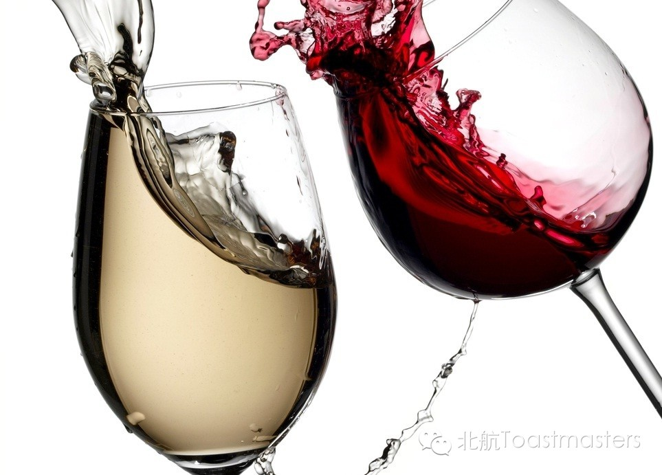
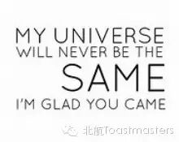
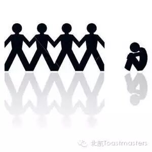

Wine
Time: 19:30-21:30, Friday, Mar. 27
Venue: Room B208, New Main Building, Beihang University

Toastmaster: Lucia
Table Topic Master: Isabelle
Wine, both home and abroad, is rich in cultural connotation. Wine joining knowledge reveals a connoisseur. Wine with good manners creates gentlemen and ladies. Wine together with a sword breeds a hero. Wine drunk with sadness leaves countless poems. But wine with a vehicle... Watch out! DRUNK DRIVING!!!
A sophisticated lady who has travelled in France and Switzerland (wine producers since Roman times) has prepared some delicious questions for you to taste. Please come with a sober mind, and you will leave with dazzling fragrance.
Prepared Speech
Why I Wanna be a Vegetarian?
cc2 Jill
A vegetarian diet is derived from plants, with or without eggs or dairy. Going veggie has been a popular choice for various reasons like religious beliefs, animal rights, health-related concerns, or keeping fit. Why would Jill want to go veggie?
Prepared Speech
Glad You Came
cc4 Sophie

Many things turn out to be pities, but the presence of you, my friend, is the highlight of my life. However, as sometimes stars are outshine by streetlights, I forget how much more important you are than what appears to be. Today, wake me up and remind me these: Let bypass be bypass; let yet-to-come to come. Nothing really matters; I'm glad You Came.
Prepared Speech
Can You Feel the Depression?
CC7 Veronica

Depression, increasingly common these days, leads to endless reverse effects like worsened relationship, job loss, decaying health, and even self-injuries and suicides. What should be done to avoid falling into depression? Listen to Veronica for inspiration!
Map
Our meeting venue changed to RoomB208, New Main Building, Beihang University (北航新主楼B208房间). And you can phone to Keven for help.
TEL: 15810539853
See you in the meeting!

https://mp.weixin.qq.com/s/-szOZVbgcS3WQnW6Qd4TMQ
本页为抢救式本地归档，图文已永久保存。